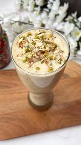

Banana Shake

Description
Banana shake is wonderful desert, it is good to energize you in the morning and is widely recommended for gaining weight.
Today we will learn to prepare this sugary delight.
Ingredients
- 3 Ripe Banana
- Milk
- Sugar or Jaggery
- Dry fruits(optional)
Steps
- Add 500ml of milk in the mixer.
- Cut and add 3 medium sized banana.
- Add 2 tablespoons of sugar/jagery.
- Add Dry fuilts: Almonds, cashew and rasins.(optional)
- Grind to your desired consistency.
Home